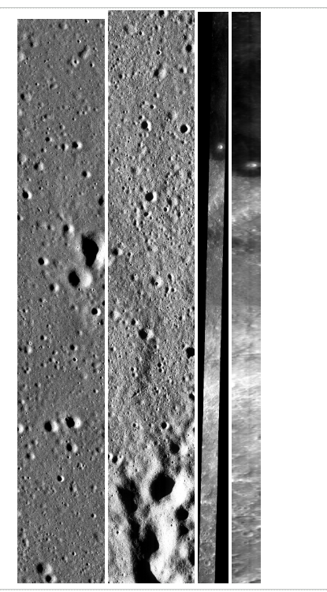
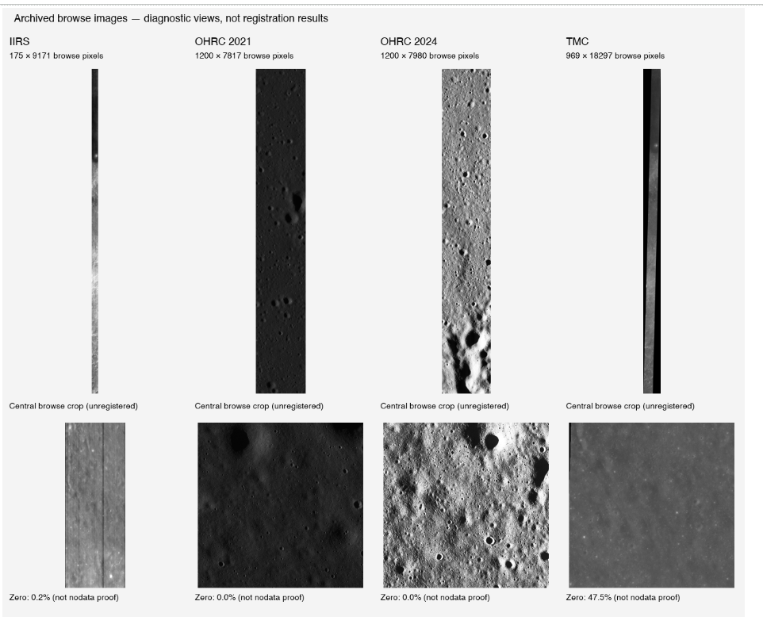
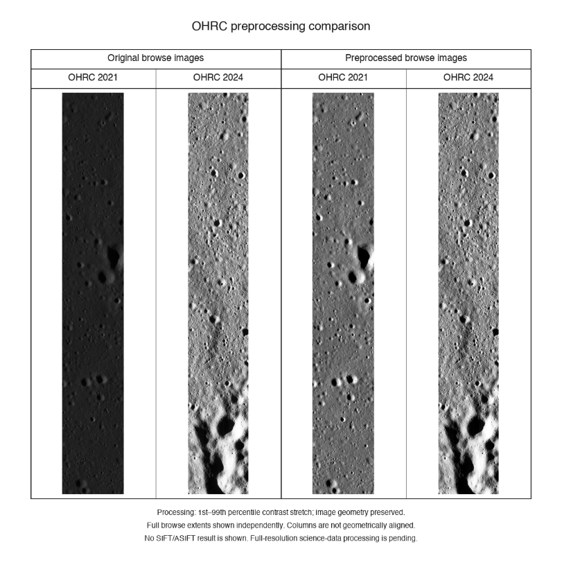
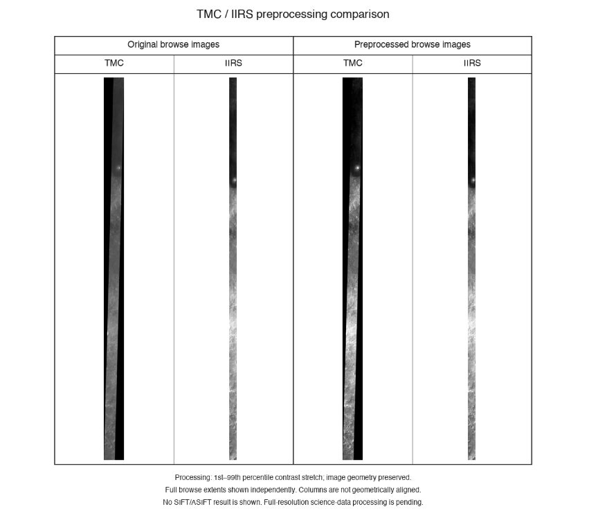
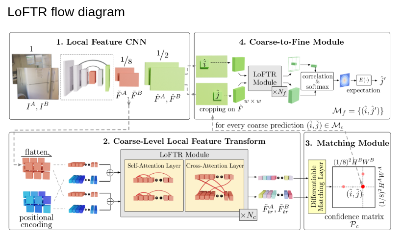
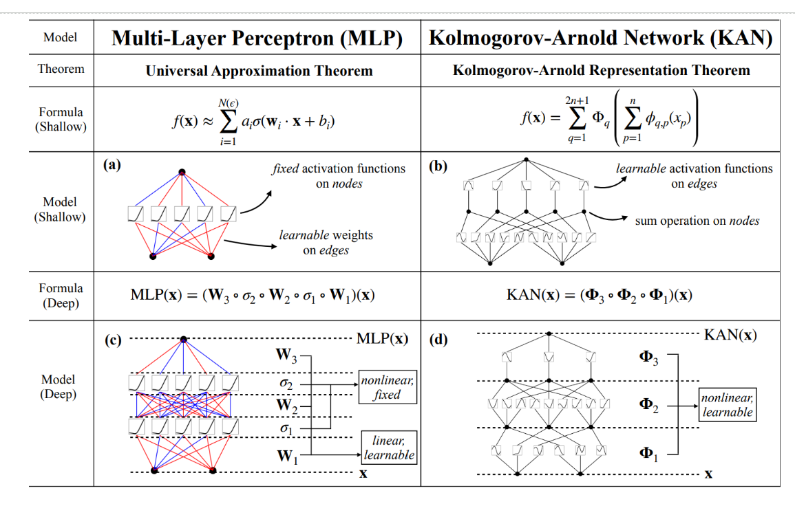
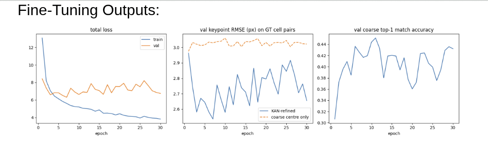
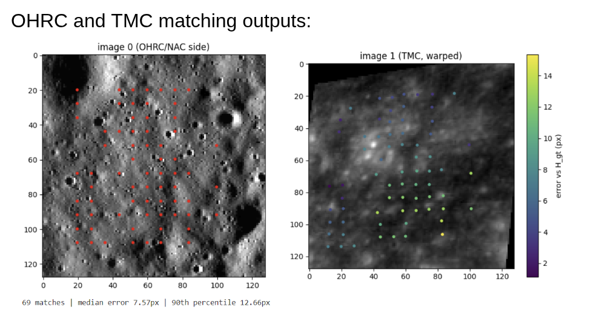

Imagery collected from ISRO as part of the project dataset.
LUNAR IMAGE REGISTRATION · PROJECT DEMONSTRATION
MISSION PATH / 19 STAGES
Registering the
Moon across sensors.
The website is a demonstration of how the dataset was collected and preprocessed, followed by research about transformer and deep-learning methods applied to the dataset to do image registration.
Begin mission↓
FIGURE01
ROUTEDATA → MODEL → OUTPUT
01 / DATASET ACQUISITION
Start with the lunar terrain.
The project begins by bringing together Chandrayaan-2 imagery from ISRO and LRO NAC reference imagery for the same lunar region.
01 / 08
Imagery collected from ISRO as part of the project dataset.
Spectral-image data prepared alongside the other lunar inputs.
Reference images covering the same lunar region under different illumination, scale and viewing conditions.
01Collect
Collected Chandrayaan-2 OHRC, TMC-2 and IIRS imagery from ISRO, along with LRO NAC reference images covering the same lunar region under different illumination, scale and viewing conditions.
02Verify
Verified image metadata, dimensions, spatial resolution, acquisition time, Sun angles and file integrity.
03Compare
Compared the geographic footprints to identify image pairs containing common lunar terrain.

02 / PROJECT ROADMAP
DOWNLINK / 19 STAGES
Follow the project
stage by stage.
Each milestone below corresponds directly to the numbered workflow in the supplied document. The grouping is visual only.
01
PHASE 01 · ACQUISITION
Collect multi-sensor lunar imagery.
Collected Chandrayaan-2 OHRC, TMC-2 and IIRS imagery from ISRO, along with LRO NAC reference images covering the same lunar region under different illumination, scale and viewing conditions.
02
PHASE 01 · ACQUISITION
Verify image metadata.
Verified image metadata, dimensions, spatial resolution, acquisition time, Sun angles and file integrity.
03
PHASE 01 · ACQUISITION
Identify common lunar terrain.
Compared the geographic footprints to identify image pairs containing common lunar terrain.
04
PHASE 02 · PREPROCESSING
Prepare scientific image formats.
Read and prepared the PDS .IMG, .TIF and spectral-image formats using GDAL and their accompanying metadata.
05
PHASE 02 · PREPROCESSING
Convert processing inputs.
Converted suitable images into GeoTIFF-compatible processing inputs while preserving their lunar coordinate information.
06
PHASE 02 · PREPROCESSING
Build validity masks.
Created validity masks to remove exterior padding and invalid pixels while retaining genuine dark shadow regions.
07
PHASE 02 · PREPROCESSING
Resample to a common resolution.
Resampled images to a common spatial resolution using antialiased downsampling to avoid losing terrain structure.
08
PHASE 02 · PREPROCESSING
Project onto one lunar grid.
Projected the moving and reference images onto a common lunar coordinate grid.
09
PHASE 02 · PREPROCESSING
Normalize intensity.
Applied percentile-based intensity normalization to reduce sensor-dependent brightness and contrast differences.
10
PHASE 03 · TRAINING DATA
Prepare spatially aligned tiles.
Prepared spatially aligned image tiles with moving images, fixed images, validity masks and correspondence transformations.
11
PHASE 03 · TRAINING DATA
Split regions without leakage.
Divided geographically separate regions into training, validation and test sets to prevent data leakage.
12
PHASE 03 · TRAINING DATA
Add controlled transformations.
Added controlled rotation, translation, scale and illumination changes with exactly known ground-truth transformations.
13
PHASE 04 · LOFTR
Fine-tune coarse attention.
Fine-tuned LoFTR’s coarse-attention module, keeping the pre-trained ResNet as it is, to improve correspondence detection between different lunar imaging sensors.
14
PHASE 04 · LOFTR
Keep the ResNet, tune attention.
Fine tuning only the attention layers helps reduce the computational cost. Pre-trained ResNet is trained on outdoor dataset which can capture important feature even in bright and shadowy environments..which is utmost needed for our sun-angle invariant.
15
PHASE 04 · KAN
Replace the transformer’s last layer.
Used KAN (kolmogrov arnold network) to replace the last layer of the transformer. Normal transformers learn fixed weight matrices while training. KAN places learnable 1D spline functions on the edges of the network instead of the weight of the node.
16
PHASE 04 · KAN
Use the Kolmogorov representation basis.
KAN is a new alternative to neural networks. Derived from the Kolmogorov Representation Theorem.
17
PHASE 04 · KAN
Preserve localized information.
LoFTR fine module over-smooth predictions near craters and sharp shadows. In KAN B-spline functions are already continuous allowing easier sub pixelation interpolation without losing localised information.
18
PHASE 05 · FILTERING
Filter predicted correspondences.
Filtered predicted correspondences using confidence checks and robust geometric-transform estimation.
19
PHASE 05 · EVALUATION
Evaluate the output.
Evaluated the output using match count, inlier ratio, ground-truth error, corner-transfer error and spatial match coverage.
03 / VISUAL EVIDENCE
Once the roadmap reaches preprocessing, the evidence appears.
Every scientific figure is presented in its own frame, with no overlays added to the image itself.
03 / 08
OHRC

TMC / IIRS

04 / MODEL RESEARCH
13 — 14
LoFTR / coarse attention
Fine-tuned LoFTR’s coarse-attention module, keeping the pre-trained ResNet as it is, to improve correspondence detection between different lunar imaging sensors.
Attention-only fine-tuning
Fine tuning only the attention layers helps reduce the computational cost.
Pre-trained ResNet is trained on outdoor dataset which can capture important feature even in bright and shadowy environments..which is utmost needed for our sun-angle invariant.

15 — 17
KAN / transformer last layer
Used KAN (kolmogrov arnold network) to replace the last layer of the transformer.
Learnable 1D spline functions
Normal transformers learn fixed weight matrices while training. KAN places learnable 1D spline functions on the edges of the network instead of the weight of the node.
KAN is a new alternative to neural networks. Derived from the Kolmogorov Representation Theorem.
LoFTR fine module over-smooth predictions near craters and sharp shadows. In KAN B-spline functions are already continuous allowing easier sub pixelation interpolation without losing localised information.

05 / FILTERING + OUTPUTS
The roadmap ends where matches become measurable.
Confidence checks, robust geometric-transform estimation, and the evaluation measures named in the document.
05 / 08
01Match count
02Inlier ratio
03Ground-truth error
04Corner-transfer error
05Spatial match coverage
FINE-TUNING OUTPUTS

MATCHING OUTPUTS

69matches shown in the supplied matching-output figure
7.57 pxmedian error shown in the supplied matching-output figure
12.66 px90th percentile shown in the supplied matching-output figure
05 / RESULTS & FINDINGS
DOCUMENTED OUTPUTS
What the current run actually shows.
These are the measured and visual outputs shown in the supplied project document. No additional benchmark claims are introduced here.
matches shown in the supplied OHRC/NAC and TMC matching output.
median error shown beneath the matching visualization.
90th-percentile error shown beneath the matching visualization.
FINE-TUNING TRENDS
Three signals visible in the plotted run.
01
Training loss falls across the run. The training-loss curve drops substantially from the first epochs toward the final epochs shown.
02
KAN-refined RMSE stays below the coarse-only comparison. The validation checkpoint RMSE curve for the KAN-refined model remains under the dashed coarse-only reference throughout the plotted epochs.
03
Coarse top-1 match accuracy fluctuates but improves from its initial value. The plotted validation accuracy rises from roughly 0.30 at the beginning and remains around the 0.4 level later in the run.
FINE-TUNING OUTPUTS
CORRESPONDENCE OUTPUT
READOUT
From model output to measurable correspondence.
The project document evaluates correspondence using match count, inlier ratio, ground-truth error, corner-transfer error and spatial match coverage.
The matching figure shown here explicitly reports the three values above; the other evaluation measures are part of the documented evaluation protocol.
RESULT STATUS
These findings describe the outputs visible in the supplied project material. They are not presented as a comparison against an external benchmark or as a claim of final system performance beyond the documented run.